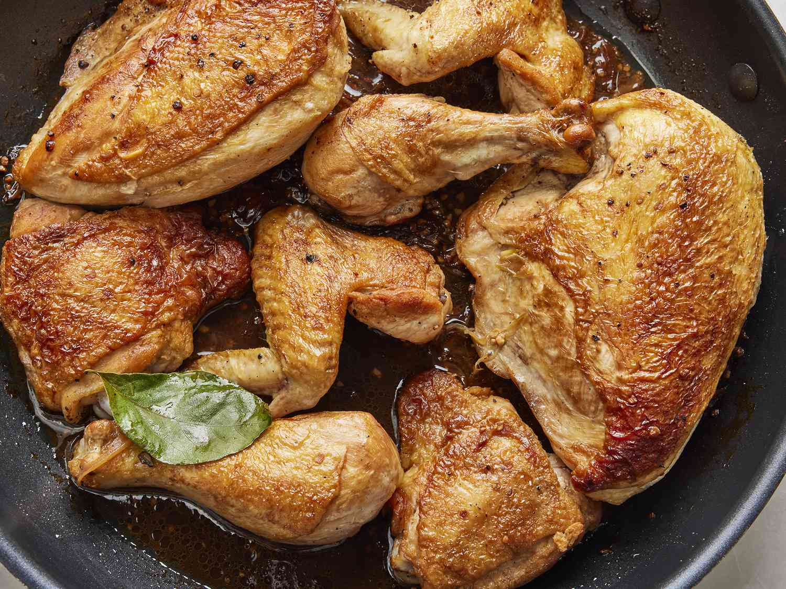

Chicken Adobo

Filipino Chicken Adobo
Chicken Adobo is an authentic Filipino dish and is one of the mostly recognized Filipino foods. Not to be mistaken with Mexican adobo, this dish is uniquely prepared by stewing chicken in vinegar and soy sauce.
Several sources who are experts in Asian food history say that the Filipinos were already cooking adobo even before Spanish colonization. According to them, cooking with vinegar preserves the meat. This method is also considered as one of the earliest food preservation practice.
Ingredients
- 2 tablespoons vegetable oil
- 1 (3 pound) chicken, cut into pieces
- 1 large onion, quartered and sliced
- 2 tablespoons minced garlic
- ⅔ cup low sodium soy sauce
- ⅓ cup white vinegar
- 1 tablespoon garlic powder
- 2 teaspoons black pepper
- 1 bay leaf
Cooking Instructions
- Heat vegetable oil in a large skillet over medium-high heat. Cook chicken pieces until golden brown, 2 to 3 minutes per side. Transfer chicken to a plate and set aside.
- Add onion and garlic to the skillet; cook until softened and brown, about 6 minutes.
- Return chicken to pan, increase heat to high, and bring to a boil. Reduce heat to medium-low, cover, and simmer until chicken is tender and cooked through, 35 to 40 minutes.
- Return chicken to pan, increase heat to high, and bring to a boil. Reduce heat to medium-low, cover, and simmer until chicken is tender and cooked through, 35 to 40 minutes.
Get Back